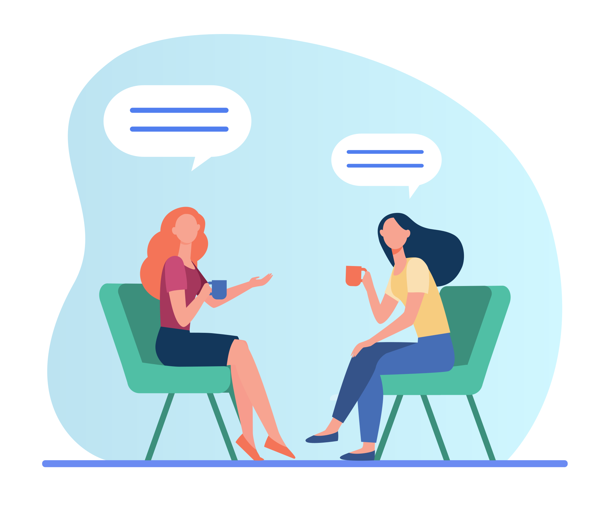
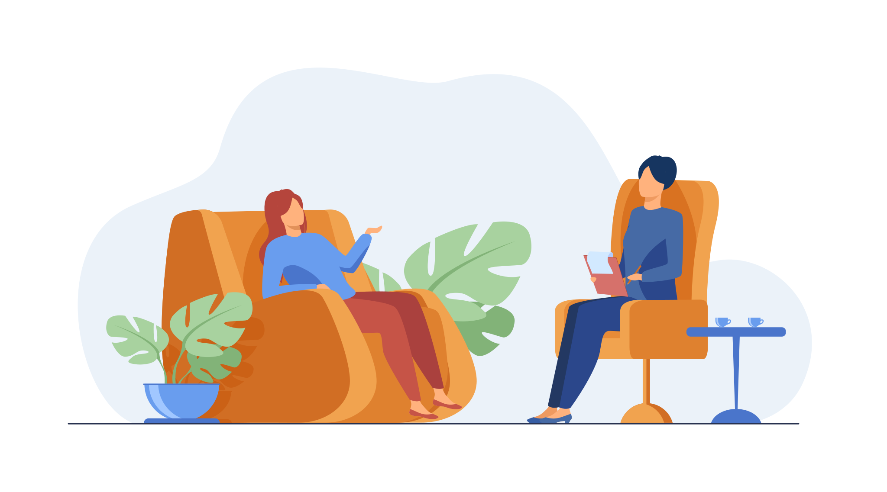

Ar fi bine să vorbești cu un psiholog, dacă te-ai simțit că:

Ești prea singur.
Trăiești prea mult în trecut.
Nu știi s-o iei de la capăt.
Amâni la nesfârșit luarea unei decizii.
Ți-e frică să îți exprimi punctul de vedere.
Ți-e greu să spui "nu".
Nu mai știi cine ești.
Ți-e frică să nu-ți pierzi mințile.
Nu vezi rostul zilei de mâine.
Îți lipsește ceva, fără a putea spune ce.
Ești nemulțumit de aspectul fizic.
Ești neîmplinit profesional.
Nu te mai înțelegi cu familia, părinții, copiii, colegii.
Ai probleme de relaționare în viața de cuplu.
Nu mai ai dorință sexuală.
Nu poți să-ți faci prieteni.
Nu mai știi să te bucuri de viață.
Și mai ai speranța că poți fii ajutat, apelează la un cabinet psihologic pentru câteva ședințe
de
consiliere sau pentru
psihoterapie. Este spațiul în care poti simți că cineva te ascultă fară să te judece, te acceptă
așa
cum ești și te va
ajuta să poți să te ajuți singur.
MIT "Nu sunt depresiv am doar o pasa proasta. Imi trece mie…"

REALITATE: Depresia este o boala care poate afecta serios toate aspectele vietii tale, incluzând
relatiile cu alte
persoane, performanta la locul de munca, cat și posibilitatea de a te bucura de ceea ce iti place sa
faci în timpul tau
liber.